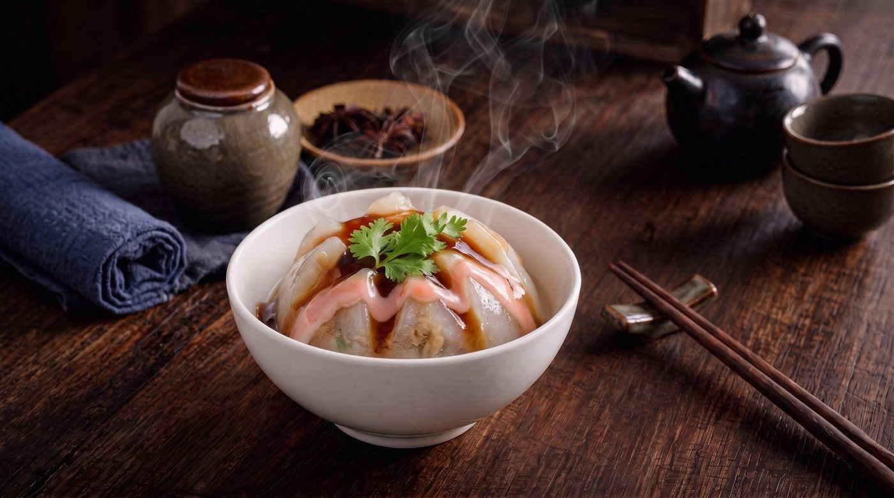
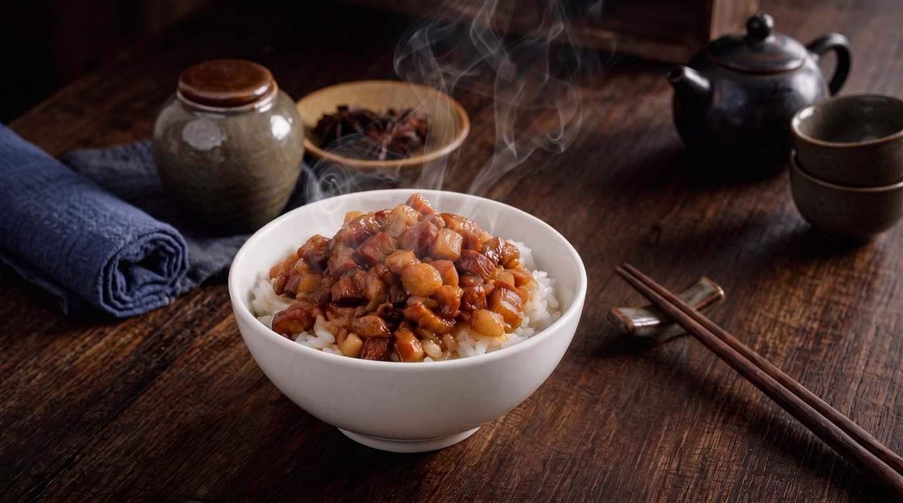
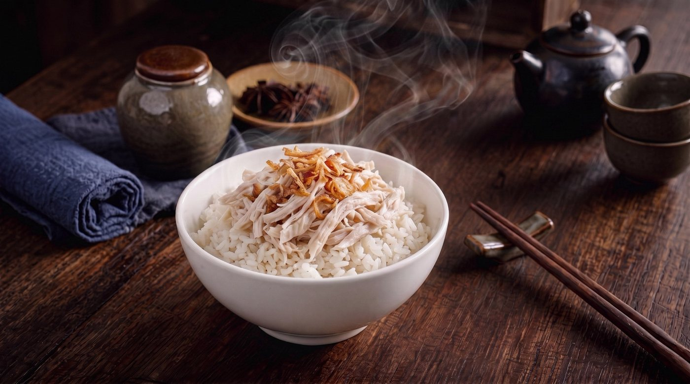
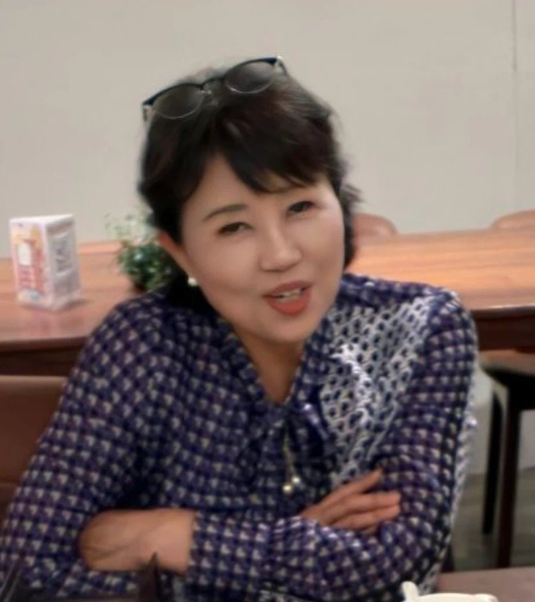
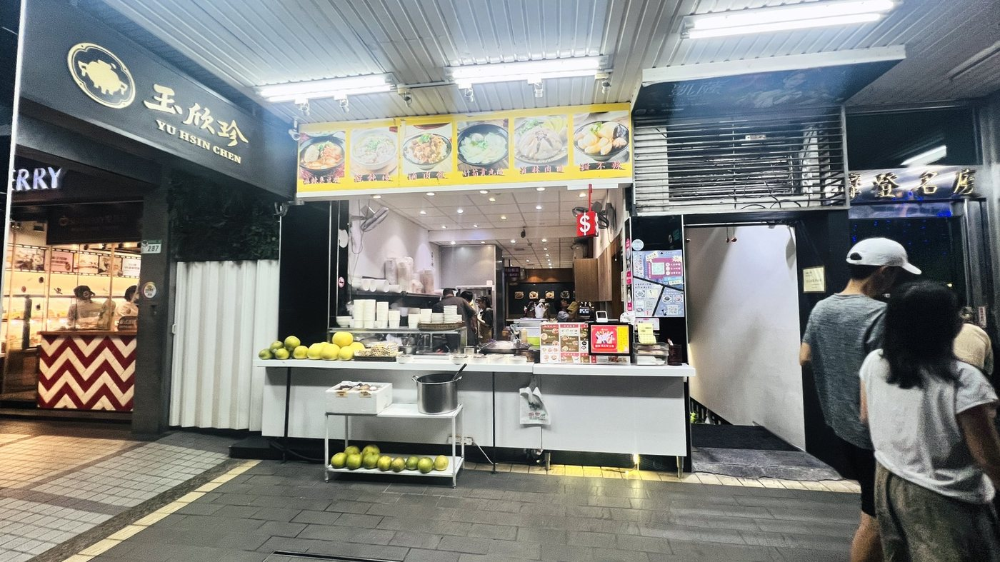
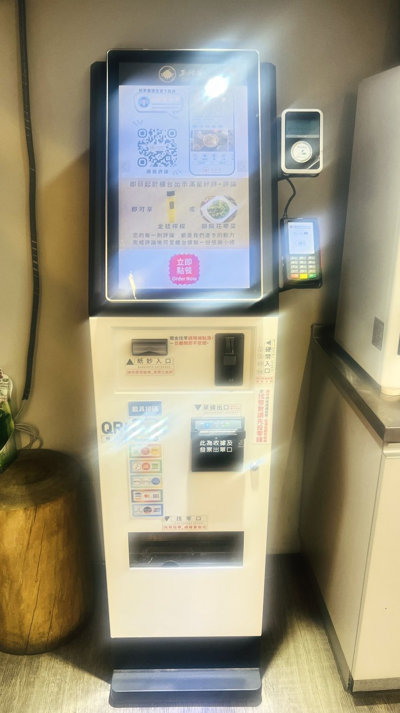
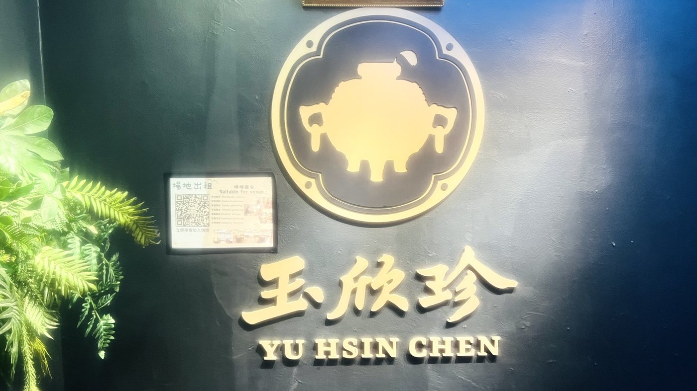
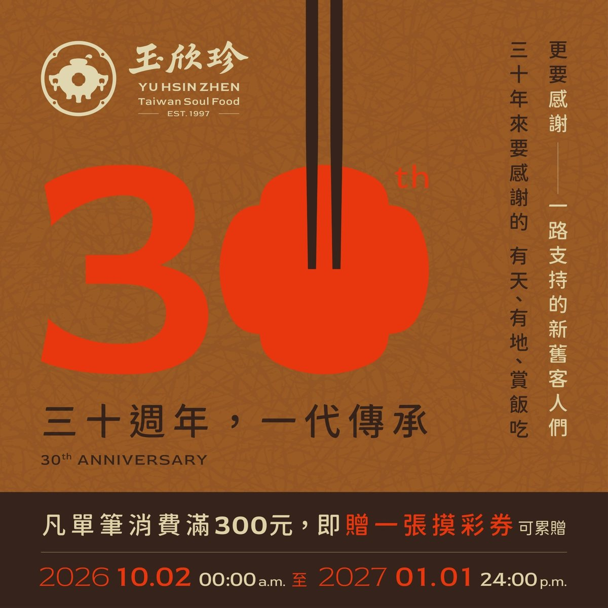

<title>商業菁英 No.003</title>
<link rel="preload" as="image" href="img/cover.jpg" fetchpriority="high">
<link rel="preconnect" href="https://fonts.googleapis.com">
<link rel="stylesheet" href="https://fonts.googleapis.com/css2?family=Noto+Serif+TC:wght@500;700;900&family=Noto+Sans+TC:wght@400;500;700&family=Cormorant+Garamond:wght@500;600&display=swap">
<style>
/* Layout: 12 portrait magazine pages stacked on a dark desk; same cream sheet + red/gold masthead language as No.001. Single deliberate print look. */
:root{
  --desk:#2a2220;
  --paper:#fbf6ec;
  --paper-2:#f3ead8;
  --ink:#2b2320;
  --ink-soft:#6a5b52;
  --red:#9c1c1c;
  --red-deep:#6e1010;
  --gold:#b88a2e;
  --gold-soft:#e6cf98;
  --rule:#d9c9a8;
  --hero:#2b1a12;
  --white:#ffffff;
  /* five-element swatches, taken from the product photos */
  --e-metal:#e9e1cf;
  --e-fire:#b8323f;
  --e-earth:#e0a72a;
  --e-water:#2f2b2b;
  --e-wood:#8aa44a;
  --f-display:"Noto Serif TC","Songti TC","PMingLiU",serif;
  --f-body:"Noto Sans TC","PingFang TC","Microsoft JhengHei",sans-serif;
  --f-latin:"Cormorant Garamond","Times New Roman",serif;
  color-scheme:light;
}
*{box-sizing:border-box}
body{background:var(--desk);color:var(--ink);font-family:var(--f-body);font-size:18px;line-height:1.85;margin:0;padding:32px 16px 64px}
.note{max-width:820px;margin:0 auto 20px;color:var(--gold-soft);font-size:16px;line-height:1.6;display:flex;gap:10px;align-items:flex-start}
.note b{color:var(--white);font-weight:500;white-space:nowrap}
.tbc{background:linear-gradient(transparent 62%,rgba(184,138,46,.28) 62%)}
.pages{display:flex;flex-direction:column;gap:36px;align-items:center}
.page{position:relative;width:100%;max-width:820px;background:var(--paper);box-shadow:0 18px 40px rgba(0,0,0,.45);padding:56px 60px 70px;overflow:hidden}
@media (min-width:860px){.page{min-height:1160px}}
@media (max-width:600px){.page{padding:36px 22px 60px}}
.folio{position:absolute;left:60px;right:60px;bottom:24px;display:flex;justify-content:space-between;font-size:14px;letter-spacing:.18em;color:var(--ink-soft);border-top:1px solid var(--rule);padding-top:10px}
@media (max-width:600px){.folio{left:22px;right:22px}}
.folio .pn{font-family:var(--f-latin);font-size:18px;color:var(--red);letter-spacing:0}
.kicker{display:inline-flex;align-items:stretch;font-family:var(--f-display);font-weight:700;font-size:17px;letter-spacing:.12em}
.kicker span:first-child{background:var(--red);color:var(--white);padding:4px 12px}
.kicker span+span{border:1px solid var(--red);color:var(--red);padding:3px 12px}
h1,h2,h3{font-family:var(--f-display);text-wrap:balance;margin:0;color:var(--ink)}
h2{font-size:clamp(28px,5vw,44px);font-weight:900;line-height:1.3;margin-top:18px}
h2 em{font-style:normal;color:var(--red)}
.nowrap{white-space:nowrap;display:inline-block}
h3{font-size:20px;font-weight:700;line-height:1.5}
p{margin:0}
.lede{font-family:var(--f-display);font-size:19px;line-height:1.9;color:var(--ink-soft);margin-top:18px;max-width:40em}
.rule-gold{height:2px;background:linear-gradient(90deg,var(--gold),var(--gold-soft) 60%,transparent);margin:26px 0}
.cols{column-count:2;column-gap:36px;column-rule:1px solid var(--rule)}
@media (max-width:640px){.cols{column-count:1}}
.cols p{margin-bottom:1em;text-align:justify}
.cols p:first-child::first-letter{font-family:var(--f-display);font-weight:900;font-size:3.4em;float:left;line-height:1;margin:.05em .12em 0 0;color:var(--red)}

/* figures */
figure{margin:0}
.fig img{display:block;width:100%;height:auto;border:6px solid var(--white);box-shadow:0 0 0 1px var(--rule)}
.fig figcaption{font-size:15.5px;color:var(--ink-soft);margin-top:8px;letter-spacing:.04em}
.fig figcaption b{color:var(--red);font-weight:700;margin-right:6px}
.split{display:grid;grid-template-columns:minmax(0,1fr) minmax(0,1fr);gap:32px;align-items:start;margin-top:26px}
@media (max-width:640px){.split{grid-template-columns:1fr}}
.split>*{min-width:0}

/* tables */
.tbl{overflow-x:auto;margin-top:22px}
table{border-collapse:collapse;width:100%;font-size:17px;line-height:1.6}
th{font-family:var(--f-display);font-weight:700;color:var(--white);background:var(--red);text-align:left;padding:9px 12px;white-space:nowrap}
td{padding:10px 12px;border-bottom:1px solid var(--rule);vertical-align:top}
tr:nth-child(even) td{background:var(--paper-2)}
td.el{font-family:var(--f-display);font-weight:900;white-space:nowrap}
.dot{display:inline-block;width:12px;height:12px;border-radius:50%;margin-right:8px;vertical-align:-1px;box-shadow:0 0 0 1px rgba(0,0,0,.18)}

/* ============ COVER ============ */
.cover{padding:0;display:block}
@media (min-width:860px){.page.cover{min-height:0}}
.cover{position:relative;container-type:inline-size}
.cover-issue{position:absolute;left:86.29%;width:11.69%;top:4.545%;display:flex;flex-direction:column;align-items:center;font-family:var(--f-latin);color:var(--ink);line-height:1;pointer-events:none}
.cover-issue span{display:block}
.ci-y{font-size:3.613cqw;font-weight:600}
.ci-m{font-size:8.927cqw;font-weight:600;color:var(--red-deep);margin-top:.2125cqw}
.ci-s{font-size:1.7cqw;letter-spacing:.06em;margin-top:.6376cqw}
.ci-no{font-size:2.444cqw;font-weight:600;margin-top:1.2752cqw}
.cover-img{display:block;width:100%;height:auto;aspect-ratio:941/1672}
.mast{padding:22px 40px 14px;display:grid;grid-template-columns:1fr auto;gap:8px 24px;align-items:end}
@media (max-width:600px){.mast{padding:18px 18px 12px;grid-template-columns:1fr}}
.mast-top{grid-column:1/-1;display:flex;justify-content:space-between;gap:12px;flex-wrap:wrap;font-size:16px;letter-spacing:.2em;color:var(--ink);font-weight:500;border-bottom:1px solid var(--ink);padding-bottom:8px}
.mast-top .en{font-family:var(--f-latin);letter-spacing:.32em;font-size:16px;text-align:right;line-height:1.2}
.mast-title{font-family:var(--f-display);font-weight:900;font-size:clamp(64px,16vw,138px);line-height:1;letter-spacing:.02em;color:var(--red);white-space:nowrap}
.mast-title .g{color:var(--gold)}
.mast-issue{border-left:1px solid var(--ink);padding-left:20px;text-align:center;font-family:var(--f-latin);line-height:1.1;display:grid;gap:4px;justify-items:center}
@media (max-width:600px){.mast-issue{border-left:0;padding-left:0;grid-auto-flow:column;align-items:baseline;gap:14px;justify-content:start}}
.mast-issue .y{font-size:28px;font-weight:600}
.mast-issue .m{font-size:64px;font-weight:600;color:var(--red-deep)}
.mast-issue .s{font-size:16px;letter-spacing:.1em}
.mast-issue .no{font-size:19px;font-weight:600}
.mast-issue .tag{background:var(--red);color:var(--white);font-family:var(--f-display);font-weight:700;font-size:18px;padding:4px 12px;margin-top:4px}
.mast-row{grid-column:1/-1;display:flex;justify-content:space-around;font-family:var(--f-display);font-weight:700;letter-spacing:.5em;font-size:17px;border-top:1px solid var(--ink);border-bottom:1px solid var(--ink);padding:5px 0;flex-wrap:wrap}
.mast-row i{font-style:normal;color:var(--gold);letter-spacing:0}

.hero{position:relative;background:var(--hero);color:var(--white);display:grid;grid-template-columns:minmax(0,1.15fr) minmax(0,.85fr);min-height:560px}
@media (max-width:640px){.hero{grid-template-columns:1fr}}
.hero-img{position:absolute;inset:0;background:url("img/hero.jpg") center/cover no-repeat;opacity:.5}
.hero::after{content:"";position:absolute;inset:0;background:linear-gradient(90deg,rgba(43,26,18,.96) 0%,rgba(43,26,18,.75) 52%,rgba(43,26,18,.15) 100%)}
.hero-copy{position:relative;z-index:1;padding:36px 0 36px 40px;display:flex;flex-direction:column;gap:14px}
@media (max-width:600px){.hero-copy{padding:28px 18px}}
.hero .kicker span:first-child{background:var(--gold);color:var(--hero)}
.hero .kicker span+span{border-color:var(--gold);color:var(--gold-soft)}
.hero-big{font-family:var(--f-display);font-weight:900;font-size:clamp(52px,10vw,88px);white-space:nowrap;line-height:1;color:var(--gold-soft);letter-spacing:.04em;text-shadow:0 4px 18px rgba(0,0,0,.5)}
.hero-sub{font-family:var(--f-display);font-weight:900;font-size:clamp(24px,4.4vw,36px);white-space:nowrap;line-height:1.2}
.hero-line{font-family:var(--f-display);font-weight:700;font-size:clamp(18px,3vw,23px);line-height:1.6;border-bottom:1px solid rgba(230,207,152,.5);padding-bottom:12px}
.hero-line em{font-style:normal;color:var(--gold-soft)}
.hero-tags{font-family:var(--f-display);font-weight:700;font-size:19px;letter-spacing:.06em}
.hero-tags span{color:var(--gold)}
.swatches{display:flex;gap:10px;margin-top:6px}
.swatches span{width:30px;height:30px;border-radius:50%;border:2px solid rgba(255,255,255,.7)}
.hero-man{position:relative;z-index:1;align-self:end;background:url("img/portrait.jpg") center top/cover no-repeat;aspect-ratio:3/4.4;max-width:100%;margin:28px 28px 0 0;border:6px solid var(--white);border-bottom:0}
@media (max-width:640px){.hero-man{margin:0 18px;width:70%;justify-self:end}}
.hero-strip{position:relative;z-index:1;grid-column:1/-1;background:url("img/fivebuns.jpg") center/cover no-repeat;height:120px;border-top:3px solid var(--gold)}

.focus{padding:22px 40px 26px;background:var(--paper)}
@media (max-width:600px){.focus{padding:18px}}
.focus-head{display:inline-block;background:var(--red);color:var(--white);font-family:var(--f-display);font-weight:700;font-size:20px;padding:4px 26px 4px 14px;clip-path:polygon(0 0,calc(100% - 14px) 0,100% 50%,calc(100% - 14px) 100%,0 100%)}
.focus-grid{display:grid;grid-template-columns:repeat(4,minmax(0,1fr));gap:14px;margin-top:14px}
@media (max-width:680px){.focus-grid{grid-template-columns:repeat(2,minmax(0,1fr))}}
.focus-grid a{display:flex;flex-direction:column;gap:4px;color:inherit;text-decoration:none;border-right:1px solid var(--rule);padding-right:12px}
.focus-grid a:last-child{border-right:0}
.focus-grid a:focus-visible{outline:2px solid var(--gold);outline-offset:3px}
.focus-grid .n{font-family:var(--f-latin);font-size:34px;font-weight:600;color:var(--red);line-height:1}
.focus-grid h3{font-size:19.5px;line-height:1.35}
.focus-grid p{font-size:15.5px;color:var(--ink-soft);line-height:1.55}
.focus-grid .ph{margin-top:auto;aspect-ratio:4/3;background-size:cover;background-position:center;border:4px solid var(--white);box-shadow:0 0 0 1px var(--rule)}
.cover-bar{background:var(--red-deep);color:var(--white);display:grid;grid-template-columns:repeat(4,minmax(0,1fr));padding:14px 30px;gap:10px}
@media (max-width:600px){.cover-bar{grid-template-columns:repeat(2,minmax(0,1fr));padding:14px 18px}}
.cover-bar div{display:flex;gap:10px;align-items:center;font-size:15.5px;line-height:1.4;color:var(--gold-soft)}
.cover-bar svg{flex:none;width:30px;height:30px;stroke:var(--gold-soft);fill:none;stroke-width:1.6}
.cover-bar b{display:block;color:var(--white);font-family:var(--f-display);font-size:18px}

/* contents */
.toc{display:grid;gap:0;margin-top:24px}
.toc a{display:grid;grid-template-columns:64px 1fr auto;gap:18px;align-items:baseline;padding:13px 0;border-bottom:1px solid var(--rule);color:inherit;text-decoration:none}
.toc a:hover h3{color:var(--red)}
.toc a:focus-visible{outline:2px solid var(--gold);outline-offset:4px}
.toc .no{font-family:var(--f-latin);font-size:36px;color:var(--red);line-height:1}
.toc h3{font-size:20px}
.toc p{font-size:16.5px;color:var(--ink-soft);line-height:1.6;margin-top:2px}
.toc .pg{font-family:var(--f-latin);font-size:20px;color:var(--gold)}
.editor{margin-top:30px;background:var(--paper-2);padding:24px 28px;display:grid;gap:10px}
.editor h3{font-size:19px;color:var(--red)}
.editor .sig{text-align:right;font-family:var(--f-display);color:var(--ink-soft);font-size:17px}

/* profile */
.profile{display:grid;grid-template-columns:minmax(0,1fr) minmax(0,1.25fr);gap:40px;margin-top:30px}
@media (max-width:680px){.profile{grid-template-columns:1fr}}
.portrait{aspect-ratio:3/4;max-width:100%;background:url("img/portrait2.jpg") center top/cover no-repeat;border:6px solid var(--white);box-shadow:0 0 0 1px var(--rule)}
.name{font-family:var(--f-display);font-size:40px;font-weight:900;letter-spacing:.08em;margin-top:6px}
.name small{display:block;font-size:17px;font-weight:500;letter-spacing:.3em;color:var(--gold);margin-bottom:4px}
.facts{display:grid;grid-template-columns:auto 1fr;gap:10px 18px;margin-top:20px;font-size:17px}
.facts dt{color:var(--red);font-weight:700;letter-spacing:.1em}
.facts dd{margin:0}
.facts ul{margin:0;padding:0;list-style:none;display:grid;gap:2px}
.biz{display:grid;grid-template-columns:repeat(4,minmax(0,1fr));gap:0;margin-top:14px;border-top:3px solid var(--red)}
@media (max-width:640px){.biz{grid-template-columns:repeat(2,minmax(0,1fr))}}
.biz>div{padding:14px 14px 4px 0;display:grid;gap:4px;align-content:start}
.biz b{font-family:var(--f-display);font-size:19px;color:var(--red)}
.biz p{font-size:16.5px;line-height:1.7;color:var(--ink)}

/* five-element wheel page */
.elements{display:grid;grid-template-columns:repeat(5,minmax(0,1fr));gap:10px;margin-top:26px}
@media (max-width:640px){.elements{grid-template-columns:repeat(2,minmax(0,1fr))}}
.el-card{background:var(--paper-2);border-top:6px solid var(--c);padding:14px 12px 16px;display:grid;gap:4px;align-content:start;text-align:center}
.el-card .big{font-family:var(--f-display);font-weight:900;font-size:30px;line-height:1.2}
.el-card .nm{font-family:var(--f-display);font-weight:700;font-size:17.5px;color:var(--red)}
.el-card p{font-size:15.5px;color:var(--ink-soft);line-height:1.6}
.three{display:grid;grid-template-columns:repeat(3,minmax(0,1fr));gap:20px;margin-top:28px}
@media (max-width:680px){.three{grid-template-columns:1fr}}
.three>div{border-top:2px solid var(--gold);padding-top:12px}
.three h3{font-size:19px;color:var(--red);margin-bottom:6px}
.three p{font-size:17px;text-align:justify}

/* interview */
.qa{display:grid;gap:22px;margin-top:8px}
.q{font-family:var(--f-display);font-weight:700;font-size:19.5px;color:var(--red);display:flex;gap:10px}
.q::before{content:"Q";font-family:var(--f-latin);font-size:24px;line-height:1;color:var(--gold)}
.a{padding-left:24px;text-align:justify}
.a strong{color:var(--ink);font-weight:700}
.pull{margin:30px 0;padding:24px 0;border-block:2px solid var(--red);font-family:var(--f-display);font-size:clamp(20px,3.2vw,26px);font-weight:700;line-height:1.6;color:var(--red-deep);text-align:center;text-wrap:balance}
.pull cite{display:block;font-style:normal;font-size:16px;letter-spacing:.2em;color:var(--gold);margin-top:10px;font-weight:500}
.inset{float:right;width:44%;margin:4px 0 16px 26px}
@media (max-width:640px){.inset{float:none;width:100%;margin:0 0 18px}}

/* product lines */
.lines{display:grid;grid-template-columns:repeat(3,minmax(0,1fr));gap:20px;margin-top:28px}
@media (max-width:680px){.lines{grid-template-columns:1fr}}
.line{border-top:4px solid var(--red);background:var(--paper-2);display:grid;align-content:start}
.line img{display:block;width:100%;aspect-ratio:4/3;object-fit:cover}
.line .body{padding:16px 18px 20px;display:grid;gap:8px}
.line .tag{font-size:15px;letter-spacing:.2em;color:var(--gold);font-weight:700}
.line ul{margin:0;padding-left:1.1em;font-size:17px;line-height:1.75}
.line p{font-size:17px}
.box{margin-top:28px;border:1px solid var(--gold);padding:20px 24px;font-size:17px}
.box h3{font-size:19px;color:var(--red);margin-bottom:6px}
.box ol{margin:6px 0 0;padding-left:1.3em;display:grid;gap:6px}

/* scenes */
.scenes{display:grid;grid-template-columns:repeat(3,minmax(0,1fr));gap:18px 20px;margin-top:26px}
@media (max-width:680px){.scenes{grid-template-columns:repeat(2,minmax(0,1fr))}}
@media (max-width:420px){.scenes{grid-template-columns:1fr}}
.scene{display:grid;gap:6px;align-content:start}
.scene img{display:block;width:100%;aspect-ratio:16/9;object-fit:cover;border:4px solid var(--white);box-shadow:0 0 0 1px var(--rule)}
.scene h3{font-size:19.5px;display:flex;gap:8px;align-items:baseline}
.scene h3 span{font-family:var(--f-latin);color:var(--red);font-size:22px}
.scene .need{font-size:15px;letter-spacing:.12em;color:var(--gold);font-weight:700}
.scene p{font-size:16.5px;line-height:1.7;color:var(--ink)}

/* value chain */
.chain{margin-top:30px;overflow-x:auto}
.chain ol{list-style:none;margin:0;padding:0;display:grid;grid-template-columns:repeat(4,minmax(130px,1fr));min-width:560px}
.chain li{position:relative;padding:14px 14px 14px 26px;background:var(--red);color:var(--white);font-size:16px;line-height:1.5;clip-path:polygon(0 0,calc(100% - 14px) 0,100% 50%,calc(100% - 14px) 100%,0 100%,14px 50%)}
.chain li:nth-child(even){background:var(--red-deep)}
.chain li b{display:block;font-family:var(--f-display);font-size:18px;color:var(--gold-soft)}
.tiers{display:grid;grid-template-columns:repeat(3,minmax(0,1fr));gap:0;margin-top:22px;border:1px solid var(--gold)}
@media (max-width:640px){.tiers{grid-template-columns:1fr}}
.tiers>div{padding:18px 18px 20px;display:grid;gap:6px;align-content:start;border-right:1px solid var(--rule)}
.tiers>div:last-child{border-right:0;background:var(--paper-2)}
.tiers .lv{font-family:var(--f-latin);font-size:16px;letter-spacing:.24em;color:var(--gold);font-weight:600}
.tiers h3{font-size:19px}
.tiers p{font-size:16.5px;line-height:1.7}

/* compliance */
.dodont{display:grid;grid-template-columns:minmax(0,1fr) minmax(0,1fr);margin-top:24px;border:1px solid var(--rule)}
@media (max-width:560px){.dodont{grid-template-columns:1fr}}
.dodont>div{padding:18px 20px}
.dodont h3{font-size:19px;margin-bottom:8px;display:flex;align-items:center;gap:8px}
.dodont .ok h3{color:var(--e-wood)}
.dodont .no{background:var(--paper-2)}
.dodont .no h3{color:var(--red)}
.dodont ul{margin:0;padding:0;list-style:none;display:grid;gap:6px;font-size:17.5px}
.dodont .ok li::before{content:"○";color:var(--e-wood);margin-right:8px;font-weight:700}
.dodont .no li::before{content:"✕";color:var(--red);margin-right:8px;font-weight:700}
.dodont .no li{text-decoration:line-through;text-decoration-color:rgba(156,28,28,.45)}
.warm{margin-top:24px;display:flex;gap:16px;align-items:flex-start;background:var(--paper-2);padding:18px 22px;border-left:4px solid var(--gold)}
.warm b{font-family:var(--f-display);color:var(--red);font-size:19px;white-space:nowrap}
.warm p{font-size:17px}

.advice{margin-top:30px;background:var(--red);color:var(--white);padding:26px 30px}
.advice h3{color:var(--gold-soft);font-size:20px}
.advice ol{margin:12px 0 0;padding-left:1.3em;display:grid;gap:8px}
.check{list-style:none;padding:0;margin:12px 0 0;display:grid;gap:8px}
.check li{display:flex;gap:10px}
.check li::before{content:"";flex:none;width:16px;height:16px;border:2px solid var(--gold-soft);margin-top:5px}

/* back */
.back{background:var(--red-deep);color:#f6ead2;display:flex;flex-direction:column}
.back h2{color:var(--white)}
.back .lede{color:var(--gold-soft)}
.back .folio{color:var(--gold-soft);border-color:rgba(230,207,152,.3)}
.back .folio .pn{color:var(--gold-soft)}
.back .fig img{border-color:var(--gold-soft);box-shadow:none}
.next{margin-top:30px;display:grid;grid-template-columns:repeat(3,minmax(0,1fr));gap:18px}
@media (max-width:640px){.next{grid-template-columns:1fr}}
.next div{border:1px solid rgba(230,207,152,.45);padding:18px}
.next b{display:block;font-family:var(--f-display);color:var(--white);font-size:19px;margin-bottom:6px}
.next p{font-size:16.5px;line-height:1.7}
.colophon{margin-top:auto;padding-top:36px;display:grid;grid-template-columns:repeat(2,minmax(0,1fr));gap:8px 30px;font-size:15.5px;color:var(--gold-soft)}
@media (max-width:640px){.colophon{grid-template-columns:1fr}}
.masthead-mini{font-family:var(--f-display);font-weight:900;font-size:56px;letter-spacing:.1em;color:var(--white);line-height:1.1;margin-top:36px}
.masthead-mini small{display:block;font-family:var(--f-latin);font-size:17px;letter-spacing:.4em;color:var(--gold-soft);font-weight:500}
.disclaimer{font-size:14.5px;margin-top:22px;line-height:1.6;color:var(--gold-soft)}

/* phone refinements */
@media (max-width:640px){
  .el-card:last-child{grid-column:1/-1}
  .chain{overflow:visible}
  .chain ol{grid-template-columns:1fr;min-width:0;gap:4px}
  .chain li{clip-path:polygon(0 0,100% 0,100% calc(100% - 10px),50% 100%,0 calc(100% - 10px));padding:12px 16px 20px}
  .page{padding:32px 18px 60px}
  .folio{left:18px;right:18px}
  .page.cover{padding:0}
}
h1,h2,h3,.q,.pull,.name{word-break:keep-all;overflow-wrap:anywhere}
/* No.003 additions */
.tl{list-style:none;margin:26px 0 0;padding:0 0 0 26px;border-left:2px solid var(--gold);display:grid;gap:22px}
.tl li{position:relative}
.tl li::before{content:"";position:absolute;left:-34px;top:8px;width:14px;height:14px;border-radius:50%;background:var(--paper);border:3px solid var(--red)}
.tl .yr{font-family:var(--f-latin);font-size:30px;font-weight:600;color:var(--red);line-height:1}
.tl h3{font-size:19px;margin-top:4px}
.tl p{font-size:17.5px;color:var(--ink-soft);margin-top:4px}
.tl li.now::before{background:var(--red)}
.vs{display:grid;grid-template-columns:minmax(0,1fr) minmax(0,1fr);gap:0;margin-top:22px;border:1px solid var(--rule)}
@media (max-width:560px){.vs{grid-template-columns:1fr}}
.vs>div{padding:18px 20px}
.vs>div+div{background:var(--paper-2)}
.vs h3{font-size:19px;color:var(--red);margin-bottom:8px}
.vs ul{margin:0;padding-left:1.1em;display:grid;gap:6px;font-size:17.5px}
.photo2{display:grid;grid-template-columns:minmax(0,1fr) minmax(0,1fr);gap:16px;margin-top:22px}
@media (max-width:560px){.photo2{grid-template-columns:1fr}}
.photo2>*{min-width:0}
.event{margin-top:24px;display:grid;grid-template-columns:minmax(0,1fr) minmax(0,1.1fr);gap:24px;align-items:center}
@media (max-width:640px){.event{grid-template-columns:1fr}}
.event img{width:100%;display:block;border:4px solid var(--gold-soft)}
.event dl{display:grid;grid-template-columns:auto 1fr;gap:8px 14px;margin:0;font-size:17.5px}
.event dt{color:var(--gold-soft);font-weight:700}
.event dd{margin:0;color:#f6ead2}
.disclose{margin-top:18px;border:1px solid rgba(230,207,152,.45);padding:12px 16px;font-size:16px;color:var(--gold-soft)}
h1,h2,h3,.q,.pull,.name{word-break:keep-all;overflow-wrap:anywhere}

/* No.003 larger reading size */
body{font-size:18px!important;line-height:1.9}
.cols p,.a,.box p,.qa .a,.tl p,.vs ul,.line p{font-size:18px}
.lede{font-size:19px}
</style>

<main class="pages">

<!-- P1 Cover -->
<section class="page cover" aria-label="封面">
  
  <div class="cover-issue" aria-label="期別">
    <span class="ci-y">2026</span><span class="ci-m">11</span><span class="ci-s">NOV. 2026</span><span class="ci-no">No.003</span>
  </div>
</section>

<!-- P2 Contents -->
<section class="page" id="p2">
  <div class="kicker"><span>本期目錄</span><span>CONTENTS</span></div>
  <h2>一碗小吃，<em>三十年的堅持</em></h2>
  <p class="lede">科技大樓站旁、復興南路二段 291 號，有一家從不關燈的小吃店。它從木柵一間小店起家，用三十年把台灣小吃做成一個品牌。本期專訪玉欣珍創辦人王素銜，大家都叫她王姐。</p>
  <nav class="toc" aria-label="本期內容">
    <a href="#p3"><span class="no">01</span><div><h3>封面人物｜王素銜</h3><p>做生意，是這一輩子不會變的理想</p></div><span class="pg">P.03</span></a>
    <a href="#p4"><span class="no">02</span><div><h3>30 年時間軸</h3><p>從木柵到復興南路，從兩三人到二三十人</p></div><span class="pg">P.04</span></a>
    <a href="#p5"><span class="no">03</span><div><h3>一張菜單讀懂 30 年</h3><p>深坑的田，長在台北的餐桌上</p></div><span class="pg">P.05</span></a>
    <a href="#p6"><span class="no">04</span><div><h3>招牌解構</h3><p>員林肉圓、滷肉飯、竹筍湯</p></div><span class="pg">P.06</span></a>
    <a href="#p7"><span class="no">05</span><div><h3>菁英專訪（上）起點與傳承</h3><p>老師傅、八字取名、深坑的兩趟車</p></div><span class="pg">P.07</span></a>
    <a href="#p8"><span class="no">06</span><div><h3>24 小時的台灣味</h3><p>一位客人的邀請，改變了這家店</p></div><span class="pg">P.08</span></a>
    <a href="#p9"><span class="no">07</span><div><h3>老店的變與不變</h3><p>點餐機、外送、會員、公司化</p></div><span class="pg">P.09</span></a>
    <a href="#p10"><span class="no">08</span><div><h3>菁英專訪（下）挑戰與未來</h3><p>漲價、外送與給員工更好的未來</p></div><span class="pg">P.10</span></a>
    <a href="#p11"><span class="no">09</span><div><h3>菁英觀點｜AI 實戰筆記</h3><p>小吃店品牌化的五個關鍵</p></div><span class="pg">P.11</span></a>
    <a href="#p12"><span class="no">10</span><div><h3>三十週年，一代傳承</h3><p>30 週年活動與店家資訊</p></div><span class="pg">P.12</span></a>
  </nav>
  <div class="editor">
    <h3>編者的話</h3>
    <p>前兩期，我們談的是產業與產品；這一期，我們走進一家店。玉欣珍沒有連鎖加盟，也沒有華麗的行銷，靠的是一碗醬汁三十年沒改過的肉圓，和一位從嘉義大林農家走出來的老闆娘。她讓我們看到，一家傳統小吃店也能一步步升級：從手寫收銀到自助點餐機，從家族幫忙到二三十位員工，從行號到公司。這是《商業菁英》的第一則店家故事，也是很多小店老闆會在裡面看見自己的故事。</p>
    <p class="sig">《商業菁英》總編輯</p>
  </div>
  <div class="folio"><span>商業菁英 BUSINESS ELITE · NOV. 2026</span><span class="pn">02</span></div>
</section>

<!-- P3 Profile -->
<section class="page" id="p3">
  <div class="kicker"><span>封面人物</span><span>玉欣珍創辦人</span></div>
  <div class="profile">
    <div class="portrait" role="img" aria-label="玉欣珍創辦人王素銜" style="background-image:url('img/wang_garden.jpg')"></div>
    <div>
      <p class="name"><small>COVER STORY · WANG SU-HSIEN</small>王素銜</p>
      <p class="lede" style="margin-top:10px">「做生意是我最大的願望，也是我這一輩子永遠不會變的理想。」</p>
      <dl class="facts">
        <dt>身分</dt><dd>玉欣珍有限公司代表人，大家都叫她王姐</dd>
        <dt>出身</dt><dd>嘉義大林中坑農家，嫁到台北深坑</dd>
        <dt>創業</dt><dd>1996 年木柵開店，1997 年落腳復興南路</dd>
        <dt>店家</dt><dd>台北市大安區復興南路二段 291 號，24 小時營業</dd>
      </dl>
    </div>
  </div>
  <div class="rule-gold"></div>
  <div class="cols">
    <p>王姐出生在嘉義大林中坑的農家，後來嫁到台北深坑。娘家和夫家都是種田人家，深坑山上有竹筍，家裡自己養黑豬。她從小知道農產品的價值，也看過農產品賣不出去的辛苦。</p>
    <p>決定開店時，家人各有想法。姐姐在賣家具，希望她開一家寢具店；先生評估之後，建議做小吃。先生的一位主管，有一對開了三十年肉圓店的好朋友，王姐和先生就去跟這對老師傅夫妻學藝。1996 年，第一家店在木柵開張，第一天賣的就是肉圓和麵線。</p>
    <p>店名是先生拿王姐的八字請人取的。「玉」取自阿公的名字，「欣」是欣欣向榮，「珍」是山珍海味，意思是把農家的好東西，帶到城市來賣。</p>
    <p>三十年後，這家店從兩三個人做到二三十個人，從木柵搬到科技大樓站，從白天營業做到 24 小時。王姐說，不能變的，是初心和味道。</p>
  </div>
  <div class="folio"><span>封面人物 COVER STORY</span><span class="pn">03</span></div>
</section>

<!-- P4 Timeline -->
<section class="page" id="p4">
  <div class="kicker"><span>30 年時間軸</span><span>TIMELINE</span></div>
  <h2>從木柵到復興南路，<em>三十年的七個節點</em></h2>
  <p class="lede">每一次轉折，都不是事先規劃好的。是客人、生意與時代，一步步推著這家店往前走。</p>
  <ol class="tl">
    <li><span class="yr">1996</span><h3>木柵開店</h3><p>和美式早餐店共用店面，第一天賣肉圓與麵線，手藝學自一對經營三十年的老師傅夫妻。</p></li>
    <li><span class="yr">1997</span><h3>落腳復興南路</h3><p>一位客人邀王姐到科技大樓站旁他的早餐店，利用下午空檔試賣。人潮遠超過木柵，最後整家店搬了過來。</p></li>
    <li><span class="yr">2002</span><h3>登記「玉欣珍美食坊」</h3><p>以行號登記營業。</p></li>
    <li><span class="yr">2010</span><h3>開始 24 小時營業</h3><p>白天收銀收不完，晚上收不了攤，營業時間一路延長，最後全天不打烊。</p></li>
    <li><span class="yr">約 2016</span><h3>導入自助點餐機</h3><p>現金、刷卡、行動支付都能在機台上完成。</p></li>
    <li><span class="yr">2023</span><h3>成立玉欣珍有限公司</h3><p>從兩三個人到二三十個人，公司化是跟著時代走的必然道路。</p></li>
    <li class="now"><span class="yr">2026</span><h3>30 週年</h3><p>「三十週年，一代傳承」，以摸彩活動感謝新舊客人。</p></li>
  </ol>
  <p style="margin-top:22px;font-size:13px;color:var(--ink-soft)">註：玉欣珍品牌標示「EST. 1997」，指的是落腳復興南路現址的年份；第一家店於 1996 年在木柵開設。</p>
  <div class="folio"><span>30 年時間軸 TIMELINE</span><span class="pn">04</span></div>
</section>

<!-- P5 Menu -->
<section class="page" id="p5">
  <div class="kicker"><span>店家故事</span><span>一張菜單讀懂 30 年</span></div>
  <h2>深坑的田，<em>長在台北的餐桌上</em></h2>
  <p class="lede">玉欣珍的菜單，處處看得到深坑的影子。這不是行銷話術，而是一家農家人開的店，最自然的選擇。</p>
  <figure class="fig" style="margin-top:22px">
    
    <figcaption><b>深坑竹筍</b>自家種一甲多，另外契作一甲多。竹筍不只煮湯，也包進肉圓的內餡。</figcaption>
  </figure>
  <div class="tbl">
    <table>
      <thead><tr><th>菜單上的品項</th><th>背後的故事</th></tr></thead>
      <tbody>
        <tr><td class="el">竹筍湯、竹筍摃丸湯</td><td>深坑山上的竹筍，一半自家種、一半契作</td></tr>
        <tr><td class="el">深坑炸臭豆腐</td><td>王姐夫家所在的深坑，本來就以豆腐聞名</td></tr>
        <tr><td class="el">黑豬滷肉飯</td><td>深坑家裡自己養黑豬，肉圓與滷肉用的也是黑豬肉</td></tr>
        <tr><td class="el">地瓜葉</td><td>家人自己種的農家菜，拿到店裡來賣</td></tr>
        <tr><td class="el">員林肉圓</td><td>開店第一天就賣的招牌，學自老師傅</td></tr>
      </tbody>
    </table>
  </div>
  <div class="box">
    <h3>深坑每天兩趟車</h3>
    <p>店裡每天要出大量餐點，怎麼讓中午和凌晨的客人吃到一樣的味道？王姐的做法是分批出餐：早上一趟車從深坑把現做的食材載到店裡；下午三點再一趟，專門應付晚餐和宵夜。食材新鮮，是靠兩趟車一天一天跑出來的。</p>
  </div>
  <div class="folio"><span>店家故事 STORE STORY</span><span class="pn">05</span></div>
</section>

<!-- P6 Signatures -->
<section class="page" id="p6">
  <div class="kicker"><span>招牌解構</span><span>SIGNATURE DISHES</span></div>
  <h2>招牌三寶，<em>三十年沒改的味道</em></h2>
  <p class="lede">「我們想要把道地的台灣小吃做到最好。」王姐說，先生是一個非常講究品質的人。</p>
  <div class="lines">
    <article class="line">
      
      <div class="body">
        <span class="tag">SIGNATURE 01</span>
        <h3>員林肉圓</h3>
        <p>開店第一天就賣的品項。醬汁「從來都沒有改過」，因為老師傅希望他們把肉圓好好傳承下去。內餡用深坑黑豬肉，再包進自家竹筍。</p>
      </div>
    </article>
    <article class="line">
      
      <div class="body">
        <span class="tag">SIGNATURE 02</span>
        <h3>黑豬滷肉飯</h3>
        <p>用的是深坑家裡自己養的黑豬肉。一碗白飯淋上滷肉，是台灣人最熟悉的日常味道。</p>
      </div>
    </article>
    <article class="line">
      
      <div class="body">
        <span class="tag">SIGNATURE 03</span>
        <h3>竹筍湯</h3>
        <p>深坑山上的竹筍，從田裡到湯碗，每天有兩趟車接力。這碗湯，最能喝出玉欣珍的農家根源。</p>
      </div>
    </article>
  </div>
  <div class="photo2">
    <figure class="fig"><figcaption><b>麻辣臭豆腐</b>菜單上的人氣小吃。</figcaption></figure>
    <figure class="fig"><figcaption><b>雞肉飯</b>菜單上的日常飯食。</figcaption></figure>
  </div>
  <div class="folio"><span>招牌解構 SIGNATURE DISHES</span><span class="pn">06</span></div>
</section>

<!-- P7 Interview 1 -->
<section class="page" id="p7">
  <div class="kicker"><span>菁英專訪</span><span>起點與傳承</span></div>
  <h2>把農家的好東西，<em>帶到城市來賣</em></h2>
  <p class="lede">王姐談開店的初衷、店名的由來，以及三十年如一日的食材堅持。</p>
  <div class="rule-gold"></div>
  <figure class="fig inset">
    
    <figcaption><b>王姐</b>在玉欣珍店內接受《商業菁英》採訪。</figcaption>
  </figure>
  <div class="qa">
    <div><p class="q">當初為什麼選擇開小吃店？</p>
    <p class="a">做生意是我一生的理想。那時候姐姐在賣家具，希望我開寢具店；我先生評估以後，覺得應該做小吃。剛好先生的主管有一對好朋友，在賣肉圓跟麵線，他們家吃了幾十年。我們就去跟這對做了三十年的老師傅夫妻學，第一天賣的就是<strong>肉圓跟麵線</strong>。</p></div>
    <div><p class="q">「玉欣珍」這個店名是怎麼來的？</p>
    <p class="a">我先生特別用我的八字去請人取名。「玉」是阿公的名字；希望長輩帶給我們的，可以把農家的東西拿到城市來賣，所以取<strong>欣欣向榮、山珍海味</strong>，這是店名最初的來源。</p></div>
    <div><p class="q">肉圓的醬汁三十年來有沒有改過？</p>
    <p class="a">從來都沒有改過。我們的老師希望我們把這個肉圓好好傳承下來，把這個小吃永遠發揚光大。我們用的是黑豬肉，深坑從小黑豬就是自己養；深坑山上也有種竹筍，所以我們把這些農家菜包進肉餡裡，拿來給我們的消費者。</p></div>
  </div>
  <blockquote class="pull">「我們想要把道地的台灣小吃，做到最好。」<cite>— 王素銜（王姐）</cite></blockquote>
  <div class="qa">
    <div><p class="q">每天出這麼多餐，怎麼讓中午和凌晨吃到的味道一樣？</p>
    <p class="a">我們必須分批出餐。早上一趟車回深坑，把早上現做的先拿來店裡賣；下午三點還有一趟車，是要應付晚上跟宵夜的。我們就是這樣子，把食材顧到新鮮。</p></div>
  </div>
  <div class="folio"><span>菁英專訪 INTERVIEW · 上</span><span class="pn">07</span></div>
</section>

<!-- P8 24 hours -->
<section class="page" id="p8">
  <div class="kicker"><span>店家故事</span><span>24 小時的台灣味</span></div>
  <h2>一位客人的邀請，<em>改變了這家店</em></h2>
  <p class="lede">玉欣珍落腳復興南路，不是精算過的展店計畫，而是從一碗肉圓開始的偶然。</p>
  <figure class="fig" style="margin-top:22px">
    
    <figcaption><b>不打烊的店</b>復興南路二段 291 號，深夜仍有客人上門。</figcaption>
  </figure>
  <div class="cols" style="margin-top:22px">
    <p>木柵的第一家店，和一家美式早餐店共用店面。開店不久，一群到木柵談建案的人走進店裡，因為附近沒有像樣的地方可以談事情，而玉欣珍的店面明亮又乾淨。吃了之後，他們很驚訝：這麼好吃的東西，怎麼開在人這麼少的地方？</p>
    <p>其中一位，在復興南路科技大樓站旁開早餐店。早餐店做完早上就整天關著，他邀王姐去看看，能不能利用下午的空檔。王姐一看就決定了。「我從深坑出來，我不知道台北的人潮會是這麼多。」她和弟弟兩個人先來試做，結果客人多到不得了，木柵的人力一個一個調過來，最後木柵店收了，所有人集中到復興南路。那一年是 1997 年。</p>
    <p>生意好到什麼程度？王姐說，收銀根本來不及，錢是收不完的。晚上要收攤，卻一直收不起來。加上地點、人力，和賣的品項本來就適合宵夜，營業時間一路延長，2010 年起全天不打烊。</p>
  </div>
  <blockquote class="pull">「收銀根本就來不及，講真的，錢是收不完。」<cite>— 王素銜（王姐）</cite></blockquote>
  <div class="folio"><span>店家故事 STORE STORY</span><span class="pn">08</span></div>
</section>

<!-- P9 Change -->
<section class="page" id="p9">
  <div class="kicker"><span>案例解析</span><span>老店的變與不變</span></div>
  <h2>味道不變，<em>經營方式一直在變</em></h2>
  <p class="lede">三十年來，玉欣珍守住的是醬汁、食材與初心；跟著時代改變的，是店的運作方式。</p>
  <div class="vs">
    <div><h3>不變的</h3>
      <ul><li>肉圓醬汁三十年沒改過</li><li>深坑黑豬肉、自家與契作竹筍</li><li>每天兩趟車，分批出餐</li><li>平價的台灣小吃定位</li></ul>
    </div>
    <div><h3>改變的</h3>
      <ul><li>2010 年起 24 小時營業</li><li>約 2016 年導入自助點餐機</li><li>上架外送平台</li><li>官網、會員招募、線上預訂快取</li><li>場地出租，提供聚會與活動包場</li><li>2023 年成立公司</li></ul>
    </div>
  </div>
  <div class="photo2">
    <figure class="fig"><figcaption><b>自助點餐機</b>現金、刷卡、行動支付都能用；螢幕上邀請客人留下評論。</figcaption></figure>
    <figure class="fig"><figcaption><b>品牌牆</b>鼎形商標旁，掛著場地出租的掃碼資訊。</figcaption></figure>
  </div>
  <div class="box">
    <h3>經營者筆記</h3>
    <p>玉欣珍的升級沒有一次大改造，而是一次解決一個問題：客人多到收銀來不及，就有了點餐機；生意大到國稅局要求開發票，就成立了公司。每一步都很務實，這是傳統小店最值得參考的轉型方式。</p>
  </div>
  <div class="folio"><span>案例解析 CASE STUDY</span><span class="pn">09</span></div>
</section>

<!-- P10 Interview 2 -->
<section class="page" id="p10">
  <div class="kicker"><span>菁英專訪</span><span>挑戰與未來</span></div>
  <h2>從兩三個人到二三十人，<em>給員工更好的未來</em></h2>
  <p class="lede">公司化、漲價、外送平台，以及王姐對下一個五年的期待。</p>
  <div class="rule-gold"></div>
  <div class="qa">
    <div><p class="q">2023 年成立玉欣珍有限公司，是什麼原因？</p>
    <p class="a">國稅局看到我們生意這麼好，一定要我們開發票。我們從兩三個人到二三十個人，公司不斷在進步、在壯大，<strong>跟著時代的改變，這是必然的道路</strong>。</p></div>
    <div><p class="q">這幾年食材和人力都漲價，怎麼面對？</p>
    <p class="a">食材的貴、人力的貴，是每一個店家都要面對的。但是要經營下去，我們就必須做價格的調整。</p></div>
    <div><p class="q">外送平台對店裡是幫助還是壓力？</p>
    <p class="a">對我們來說，它是一個助力。除了附近的顧客吃得到以外，透過平台下單，我們也多了非常非常多的顧客。</p></div>
    <div><p class="q">30 週年，最想跟客人說什麼？</p>
    <p class="a">我覺得最應該感謝的，就是我們的顧客長期的照顧，讓我們有機會走過三十年。我最希望老客人回來嚐嚐老味道，我們也會有優惠和抽獎回饋大家。</p></div>
    <div><p class="q">未來五年，希望玉欣珍變成什麼樣子？最不能變的是什麼？</p>
    <p class="a">不能變的，就是我們的初心、我們的味道，把好味道留給顧客。未來五年，我希望大家感受到玉欣珍不斷在進步，有更好的品質、更好的服務；也希望跟著我這麼久的員工，有更美好的未來、更好的待遇。</p></div>
  </div>
  <blockquote class="pull">「不能變的，就是我們的初心、我們的味道。」<cite>— 王素銜（王姐）</cite></blockquote>
  <div class="folio"><span>菁英專訪 INTERVIEW · 下</span><span class="pn">10</span></div>
</section>

<!-- P11 View + AI -->
<section class="page" id="p11">
  <div class="kicker"><span>菁英觀點</span><span>AI 實戰筆記</span></div>
  <h2>小吃店品牌化的<em>五個關鍵</em></h2>
  <p class="lede">從玉欣珍的三十年，編輯部整理出傳統小吃店可以帶走的五個做法。</p>
  <div class="trends" style="display:grid;gap:18px;margin-top:22px">
    <div class="box" style="margin-top:0"><h3>1. 守住一個說得出口的招牌</h3><p>一碗醬汁三十年沒改的肉圓，就是最好的品牌故事。</p></div>
    <div class="box" style="margin-top:0"><h3>2. 讓食材來源成為底氣</h3><p>深坑的田、自家黑豬、契作竹筍，讓「道地」有具體內容。</p></div>
    <div class="box" style="margin-top:0"><h3>3. 一次解決一個瓶頸</h3><p>收銀來不及就導入點餐機，生意變大就公司化，不必一次大改造。</p></div>
    <div class="box" style="margin-top:0"><h3>4. 讓時段與通路變成營收</h3><p>24 小時、外送平台、場地出租，把同一家店的價值放大。</p></div>
    <div class="box" style="margin-top:0"><h3>5. 把員工放進未來</h3><p>從兩三人到二三十人，留得住人，才留得住味道。</p></div>
  </div>
  <div class="advice">
    <h3>AI 實戰筆記：小吃店怎麼用 AI 經營評論</h3>
    <ol>
      <li>玉欣珍的點餐機上，邀請客人留下評論並送一份小菜。評論多了以後，可以每個月把評論複製貼給 AI，請它整理「最常被稱讚的三件事」和「最常被抱怨的三件事」。</li>
      <li>遇到負評，先請 AI 起草一則誠懇、不辯解的回覆，再由店長修改成自己的語氣後發出。</li>
      <li>把整理結果交給廚房和外場，下個月再看抱怨有沒有減少。AI 負責整理，改善還是要靠人。</li>
    </ol>
  </div>
  <div class="folio"><span>菁英觀點 EDITOR'S VIEW</span><span class="pn">11</span></div>
</section>

<!-- P12 Back -->
<section class="page back" id="p12">
  <div class="kicker"><span>30 週年</span><span style="color:var(--gold-soft);border-color:var(--gold-soft)">30th ANNIVERSARY</span></div>
  <h2>三十週年，一代傳承</h2>
  <p class="lede">「三十週年，我覺得最應該感謝的，就是我們的顧客。」——王姐</p>
  <div class="event">
    
    <dl>
      <dt>活動期間</dt><dd>2026 年 10 月 2 日至 2027 年 1 月 1 日</dd>
      <dt>參加方式</dt><dd>單筆消費滿 300 元，贈摸彩券一張，可累贈</dd>
      <dt>獎項</dt><dd>咖啡機、日本來回機票兩名等</dd>
      <dt>地址</dt><dd>台北市大安區復興南路二段 291 號（捷運科技大樓站旁）</dd>
      <dt>營業</dt><dd>週一至週日 24 小時</dd>
      <dt>電話</dt><dd>02-2755-1084</dd>
    </dl>
  </div>
  <p style="font-size:12.5px;color:var(--gold-soft);margin-top:10px">活動辦法以玉欣珍現場公告為準。</p>
  <div class="next">
    <div><b>下期預告</b><p>No.004 持續帶來產業菁英與在地店家的第一手經營故事。</p></div>
    <div><b>企業專訪邀約</b><p>歡迎推薦值得被看見的店家與企業。</p></div>
    <div><b>訂閱電子報</b><p>不定期出刊，掌握產業趨勢、菁英專訪與案例解析。</p></div>
  </div>
  <p class="disclose">合作關係說明：本文為《商業菁英》與玉欣珍合作採訪，本刊未收取任何費用。文中引述經受訪者確認。</p>
  <p class="masthead-mini"><small>BUSINESS ELITE E-NEWSLETTER</small>商業菁英</p>
  <div class="colophon">
    <span>2026 年 11 月 · No.003</span>
    <span>掌握趨勢 · 連結產業 · 成就菁英</span>
    <span>發行：商業菁英編輯部</span>
    <span>聯絡信箱：9658811@gmail.com</span>
  </div>
  <div class="folio"><span>商業菁英 BUSINESS ELITE</span><span class="pn">12</span></div>
</section>

</main>
